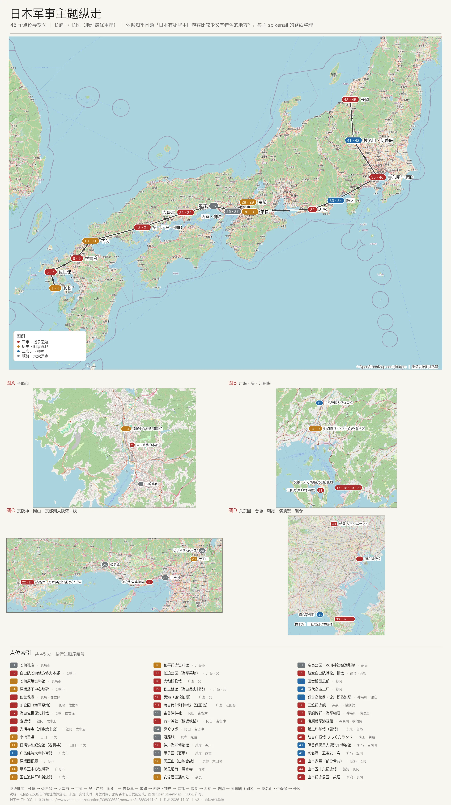

45个点位
15个区域标记
4张城区放大图
3类主题：军事 / 历史 / 二次元
这张海报把知乎答主 spikenail 的路线整理成一条从长崎到长冈的纵走：主线跨全日本，关东、京阪神·冈山、广岛·吴·江田岛、长崎四块另有放大图，底部是 45 条点位索引。
它适合先看全局，再决定要不要去某一个区域；不适合当导航。点位坐标按正文地址估算，街区级，不是逐栋核对。
THE POSTER · 2600 × 4633
完整海报
手机请沿页面向下滚动；桌面端可放大浏览器查看。没有弹窗，也不提供裁切版。

底图 © OpenStreetMap contributors，ODbL。海报底部原有署名保留，未裁切。
示意用：点位为街区级估算，不是导航；出发前请复核开放时间、预约与展品变动。
怎么读这张图
主线长崎 → 广岛·吴 → 冈山·京阪神 → 关东 → 长冈；主图只放 15 个区域标记，同城密集点合并成编号区间。
四个放大区长崎市、广岛·吴·江田岛、京阪神·冈山、关东圈；具体点位在放大图和底部索引里展开。
颜色军事·战争遗迹、历史·时事、二次元·模型、顺路·大众景点；颜色只分类，不代表推荐优先级。
行程原帖是多次旅行的合集，不是一次走完的 14 天行程；先按区域拆，再排天数。
来源与限制
路线与文字知乎答主 spikenail；原问题「日本有哪些中国游客比较少又有特色的地方？」
原始回答打开知乎原回答 ↗
抓取日期2026-11-01
底图© OpenStreetMap contributors，ODbL；海报内已署名，页面再次标注。
授权状态答主文字与路线整理未取得单独授权；按「未授权公开（风险已记录）」处理。OSM 底图按 ODbL 署名。
使用提醒个人非商业浏览；转载、改编或商业使用请先联系作者与本站。点位信息可能过期。
这张海报不是正式旅行指南，也不是考古或军事史结论；它只是把公开回答里的地点按地理顺序重排，方便继续核对。